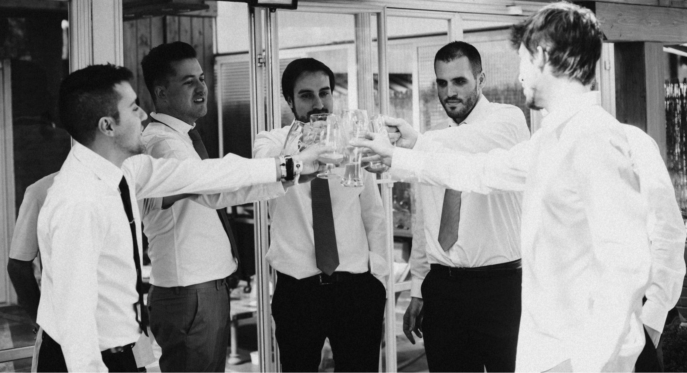
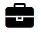
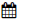

C. Manuel Hernández
Técnico Superior en Desarrollo de Aplicaciones Web
Acerca de C. Manuel Hernández
Soy una persona entusiasta a la que le gustan las nuevas tecnologías. Puedes trabajar conmigo en equipo perfectamente. Siempre desarrollándome y evolucionando como profesional de la informática. Aprendo, debato y escucho consejos para aplicarlos en el día a día. Optimista, organizado y motivado. Buscando empezar una nueva carrera en la informática.
Phasellus bibendum elementum purus ut tincidunt. Suspendisse gravida ex dapibus, finibus magna sed, interdum felis. Donec vitae hendrerit leo. Etiam tempus non enim vel condimentum. Phasellus aliquet nisl eu erat semper, vel gravida nisi cursus. Nam tristique elementum nibh sit amet convallis. Morbi mollis tortor eu lacus congue, tristique hendrerit justo imperdiet. Nulla laoreet, tortor et ultricies aliquet, tortor nisi varius erat, in congue est diam in leo. Integer lobortis ex id pulvinar egestas. Donec vel risus volutpat, aliquam dolor vel, pretium nibh. Praesent id pulvinar metus, sit amet volutpat magna. Phasellus fringilla maximus neque, eu ultrices quam consequat nec. Morbi non ornare justo. Aliquam porttitor nunc et lacinia hendrerit. Nulla varius leo vel tempor eleifend. Duis ullamcorper, ex et condimentum malesuada, dolor arcu viverra massa, in mattis metus nisi ut justo. Vivamus mollis nisi ac mauris ornare mollis. Donec sit amet condimentum erat. Maecenas et nibh elit. Nunc congue nibh non urna tempor, convallis gravida nisi dictum.
Algunos datos sobre mi página
Soy una persona entusiasta a la que le gustan las nuevas tecnologías. Puedes trabajar conmigo en equipo perfectamente. Siempre desarrollándome y evolucionando como profesional de la informática. Aprendo, debato y escucho consejos para aplicarlos en el día a día. Optimista, organizado y motivado. Buscando empezar una nueva carrera en la informática.
Phasellus bibendum elementum purus ut tincidunt. Suspendisse gravida ex dapibus, finibus magna sed, interdum felis. Donec vitae hendrerit leo. Etiam tempus non enim vel condimentum. Phasellus aliquet nisl eu erat semper, vel gravida nisi cursus. Nam tristique elementum nibh sit amet convallis. Morbi mollis tortor eu lacus congue, tristique hendrerit justo imperdiet. Nulla laoreet, tortor et ultricies aliquet, tortor nisi varius erat, in congue est diam in leo. Integer lobortis ex id pulvinar egestas. Donec vel risus volutpat, aliquam dolor vel, pretium nibh. Praesent id pulvinar metus, sit amet volutpat magna. Phasellus fringilla maximus neque, eu ultrices quam consequat nec. Morbi non ornare justo. Aliquam porttitor nunc et lacinia hendrerit. Nulla varius leo vel tempor eleifend. Duis ullamcorper, ex et condimentum malesuada, dolor arcu viverra massa, in mattis metus nisi ut justo. Vivamus mollis nisi ac mauris ornare mollis. Donec sit amet condimentum erat. Maecenas et nibh elit. Nunc congue nibh non urna tempor, convallis gravida nisi dictum.
EXPERIENCIA
Mi Experiencia
Experiencia Profesional
Tratamiento departamento Hard - Hoya Lens Iberia
06-2018 - Actualmente
Verificación y control de calidad de lentes oftálmicas.
Aplicación de tratamiento y destratamiento en lentes oftálmicas.
Presize-Montaje y Control final - Essilor España
04-2015 - 12-2017
Elaboración, montaje, reparación y mantenimiento de todo tipo de gafas.
Verificación y control de calidad de lentes oftálmicas.
Bloqueo y biselado de lentes oftalmológicas..
Adaptación de lentes y monturas..
Director Tecnico / Audioprotesista - Tecnisor Audifonos
04-2015 - 12-2017
Administración y gestión del gabinete Audioprotesico..
Anamnesis, otoscopias, audiometrías, trato con el cliente.
Valoración auditiva de los pacientes.
Reajuste de audífonos, tomas de impresión
Selección, adaptación y venta de prótesis auditivas.
Mantenimiento y calibrado de audífonos.
Asistente en el departamento de Marketing - Wottoline
04-2011 - 07-2017
Prospecciones en centros comerciales.
Búsqueda y contacto de proveedores.
Investigación de mercados.
Realización base de datos
Audioprotesista - Widex
09-2009 - 12-2009
Anamnesis, otoscopias, audiometrías, trato con el cliente.
Valoración auditiva de los pacientes.
Reajuste de audífonos, tomas de impresión
Selección, adaptación y venta de prótesis auditivas.
Mantenimiento y calibrado de audífonos.
Trato con el cliente
Verificación y control de calidad de lentes oftálmicas.
Aplicación de tratamiento y destratamiento en lentes oftálmicas.
Elaboración, montaje, reparación y mantenimiento de todo tipo de gafas.
Verificación y control de calidad de lentes oftálmicas.
Bloqueo y biselado de lentes oftalmológicas..
Adaptación de lentes y monturas..
Administración y gestión del gabinete Audioprotesico..
Anamnesis, otoscopias, audiometrías, trato con el cliente.
Valoración auditiva de los pacientes.
Reajuste de audífonos, tomas de impresión
Selección, adaptación y venta de prótesis auditivas.
Mantenimiento y calibrado de audífonos.
Prospecciones en centros comerciales.
Búsqueda y contacto de proveedores.
Investigación de mercados.
Realización base de datos
Anamnesis, otoscopias, audiometrías, trato con el cliente.
Valoración auditiva de los pacientes.
Reajuste de audífonos, tomas de impresión
Selección, adaptación y venta de prótesis auditivas.
Mantenimiento y calibrado de audífonos.
Trato con el cliente
ESTUDIOS

Formación Academica
Instituto Tecnológico Telefónica - Desarrollo aplicaciónes Web
09-2017 - Actualmente
I.E.S. Virgen de la Paloma, Madrid - Optica en anteojeria
09-2013 - 06-2015
I.E.S. Miguel Delibes, Madrid - Gestión Comercial y Marketing
09-2010 - 12-2011
I.E.S. Moratalaz, Madrid - Audioprotesis
09-2007 - 06-2009
I.E.S. Moratalaz, Madrid - Audioprotesis
09-2009 - 12-2009
Idiomas y aptitudes
Informatica
Java, HTML Y CSS, MySQL, PL/SQL, Oracle, Scrum
Idiomas
Inglés: Hablado alto Escrito alto Español Nativo
Otros datos de interes
Carnet de Conducir B, Vehiculo Propio, Disponibilidad para viajar Rivas Vaciamadrid, 28523, Madrid 666775684 cmanuelhm87@gmail.com